CrossFader¶
- class auxjad.CrossFader(fade_out_contents: abjad.score.Container, fade_in_contents: abjad.score.Container, *, fade_in_first: bool = False, fade_out_last: bool = False, initial_repetitions: int = 1, final_repetitions: int = 1, repetition_chance: float = 0.0, weighted_duration: bool = False, disable_rewrite_meter: bool = False, omit_time_signatures: bool = False, use_multimeasure_rests: bool = True, boundary_depth: Optional[int] = None, maximum_dot_count: Optional[int] = None, rewrite_tuplets: bool = True)[source]¶
Takes two
abjad.Container’s’ (or child class) and gradually crossfades from one into the other, by fading out the first while fading in the second. It makes use of twoauxjad.Faderfor that.- Basic usage:
Calling the object will return a
tupleof twoabjad.Selection’s generated by the fading process. Each call of the object will apply the fading process to one of the two containers of the previous results. That is, either a note of the first container is removed or a note of the second container is added.>>> fade_out_container = abjad.Container(r"fs'4 g'2 bf'4") >>> fade_in_container = abjad.Container(r"\times 4/5 {cs''4 d''1}") >>> abjad.show(fade_out_container)
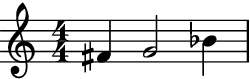>>> abjad.show(fade_in_container)
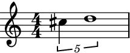>>> fader = auxjad.CrossFader(fade_out_container, fade_in_container) >>> selection_a, selection_b = fader() >>> score = abjad.Score([ ... abjad.Staff(selection_a), ... abjad.Staff(selection_b), ... ]) >>> abjad.show(score)
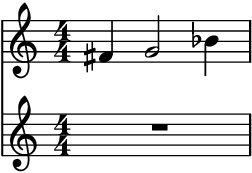>>> selection_a, selection_b = fader() >>> score = abjad.Score([ ... abjad.Staff(selection_a), ... abjad.Staff(selection_b), ... ]) >>> abjad.show(score)
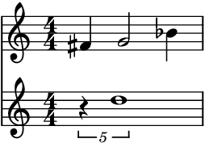>>> selection_a, selection_b = fader() >>> score = abjad.Score([ ... abjad.Staff(selection_a), ... abjad.Staff(selection_b), ... ]) >>> abjad.show(score)
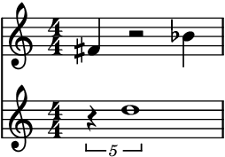The property
current_windowcan be used to access the current window without processing it.>>> notes = fader.current_window() >>> score = abjad.Score([ ... abjad.Staff(selection_a), ... abjad.Staff(selection_b), ... ]) >>> abjad.show(score)

output_all():To run through the whole process and output it as a
tupleof twoabjad.Selection’s, use the methodoutput_all().>>> fade_out_container = abjad.Container(r"fs'4 g'2 bf'4") >>> fade_in_container = abjad.Container(r"\times 4/5 {cs''4 d'1}") >>> fader = auxjad.CrossFader(fade_out_container, fade_in_container) >>> selection_a, selection_b = fader.output_all() >>> score = abjad.Score([ ... abjad.Staff(selection_a), ... abjad.Staff(selection_b), ... ]) >>> abjad.show(score)
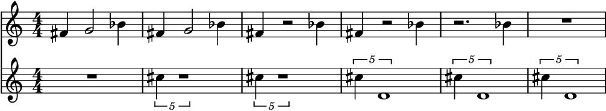output_n():To run through just part of the process and output it as a
tupleof twoabjad.Selection’s, use the methodoutput_n()and pass the number of iterations as argument.>>> fade_out_container = abjad.Container(r"e'8 fs'4. r2") >>> fade_in_container = abjad.Container(r"c''2 ~ c''8 d''4.") >>> fader = auxjad.CrossFader(fade_out_container, fade_in_container) >>> selection_a, selection_b = fader.output_n(3) >>> score = abjad.Score([ ... abjad.Staff(selection_a), ... abjad.Staff(selection_b), ... ]) >>> abjad.show(score)
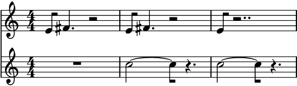- Using as iterator:
The instances of this class can also be used as an iterator, which can then be used in a for loop to run through the whole process. Note that unlike the methods
output_n()andoutput_all(), time signatures are added to each window returned by the fader. Use the functionauxjad.mutate.remove_repeated_time_signatures()to clean the output when using this class in this way.>>> fade_out_container = abjad.Container(r"e'8 fs'4. r2") >>> fade_in_container = abjad.Container(r"c''2 ~ c''8 d''4.") >>> fader = auxjad.CrossFader(fade_out_container, fade_in_container) >>> staff_a = abjad.Staff() >>> staff_b = abjad.Staff() >>> for selection_a, selection_b in fader: ... staff_a.extend(selection_a) ... staff_b.extend(selection_b) >>> auxjad.mutate.remove_repeated_time_signatures(staff_a) >>> auxjad.mutate.remove_repeated_time_signatures(staff_b) >>> score = abjad.Score([staff_a, staff_b]) >>> abjad.show(score)
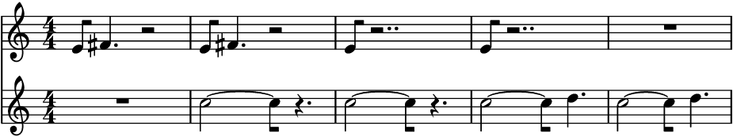- Arguments and properties:
This class can take many optional keyword arguments during its creation. Setting
fade_in_firsttoTruewill ensure that a note from the second container must be faded in before any notes of the first container are removed (defaultFalse). Settingfade_out_lasttoTruewill ensure that all notes from the second container must be faded in before the very last note of the first container is removed (defaultFalse). The argumentsinitial_repetitionsandfinal_repetitionsset the number of repetitions of the initial and final measures (default1for both).repetition_chancesets the chance of a window repeating itself, from0.0to1.0(default is0.0, i.e. no repetitions). Settingweighted_durationtoTruewill give more weight to the larger container (considering both its number of notes as well its length), making it more likely that both will fade in and out at a similar rate (default value isFalse).disable_rewrite_meterdisables theabjad.Meter.rewrite_meter()mutation which is applied to the container after every call, andomit_time_signatureswill remove all time signatures from the output (both areFalseby default). Any measure filled with rests will be rewritten using a multi-measure rest; set theuse_multimeasure_reststoFalseto disable this behaviour. The propertiesboundary_depth,maximum_dot_count, andrewrite_tupletsare passed as arguments toabjad.Meter.rewrite_meter(), see its documentation for more information.>>> fade_out_container = abjad.Container(r"fs'4 g'2 bf'4") >>> fade_in_container = abjad.Container(r"\times 4/5 {cs''4 d''1}") >>> fader = auxjad.CrossFader(fade_out_container, ... fade_in_container, ... fade_in_first=True, ... fade_out_last=True, ... initial_repetitions=3, ... final_repetitions=3, ... repetition_chance=0.7, ... weighted_duration=True, ... disable_rewrite_meter=True, ... omit_time_signatures=True, ... use_multimeasure_rests=True, ... boundary_depth=True, ... maximum_dot_count=True, ... rewrite_tuplets=True, ... ) >>> fader.fade_in_first True >>> fader.fade_out_last True >>> fader.initial_repetitions 3 >>> fader.final_repetitions 3 >>> fader.repetition_chance 0.7 >>> fader.weighted_duration True >>> fader.disable_rewrite_meter True >>> fader.omit_time_signatures True >>> fader.use_multimeasure_rests True >>> fader.boundary_depth True >>> fader.maximum_dot_count True >>> fader.rewrite_tuplets True
Use the properties below to change these values after initialisation.
>>> fader.fade_in_first = False >>> fader.fade_out_last = False >>> fader.initial_repetitions = 4 >>> fader.final_repetitions = 7 >>> fader.repetition_chance = 0.23 >>> fader.weighted_duration = False >>> fader.disable_rewrite_meter = False >>> fader.omit_time_signatures = False >>> fader.use_multimeasure_rests = False >>> fader.boundary_depth = False >>> fader.maximum_dot_count = False >>> fader.rewrite_tuplets = False >>> fader.fade_in_first False >>> fader.fade_out_last False >>> fader.initial_repetitions 4 >>> fader.final_repetitions 7 >>> fader.repetition_chance 0.23 >>> fader.weighted_duration False >>> fader.disable_rewrite_meter False >>> fader.omit_time_signatures False >>> fader.use_multimeasure_rests False >>> fader.boundary_depth False >>> fader.maximum_dot_count False >>> fader.rewrite_tuplets False
reset():Use the
reset()method to reset the fader to its initial state. This can be used to restart the process at any time.>>> fade_out_container = abjad.Container(r"fs'4 g'2 bf'4") >>> fade_in_container = abjad.Container(r"\times 4/5 {cs''4 d'1}") >>> fader = auxjad.CrossFader(fade_out_container, fade_in_container) >>> staff_a = abjad.Staff() >>> staff_b = abjad.Staff() >>> for _ in range(3): ... selection_a, selection_b = fader() ... staff_a.extend(selection_a) ... staff_b.extend(selection_b) >>> fader.reset() >>> selection_a, selection_b = fader() >>> staff_a.extend(selection_a) >>> staff_b.extend(selection_b) >>> auxjad.mutate.remove_repeated_time_signatures(staff_a) >>> auxjad.mutate.remove_repeated_time_signatures(staff_b) >>> score = abjad.Score([staff_a, staff_b]) >>> abjad.show(score)
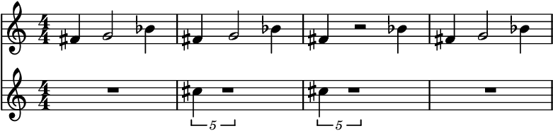- Chords:
This class also support chords. Each of their individual notes are removed or added one by one.
>>> fade_out_container = abjad.Container(r"\times 2/3 {<c' e'>2 g'1}") >>> fade_in_container = abjad.Container(r"<d' ef'>2. <bf a'>4") >>> fader = auxjad.CrossFader(fade_out_container, ... fade_in_container, ... fade_in_first=True, ... fade_out_last=True, ... ) >>> selection_a, selection_b = fader.output_all() >>> score = abjad.Score([ ... abjad.Staff(selection_a), ... abjad.Staff(selection_b), ... ]) >>> abjad.show(score)
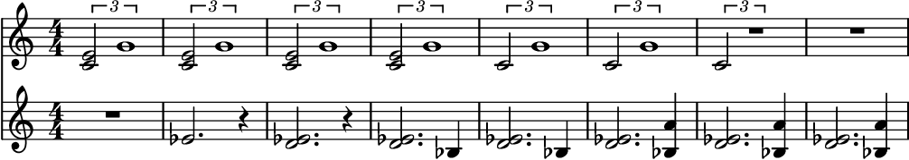len():The function
len()returns the sum of the number of notes of bothfade_in_contentsandfade_out_contents.>>> fade_out_container = abjad.Container(r"c'4 d'4 ~ d'4 r4") >>> fade_in_container = abjad.Container(r"r2 c''2") >>> fader = auxjad.CrossFader(fade_out_container, fade_in_container) >>> len(fader) 3 >>> fade_out_container = abjad.Container(r"fs'4 g'2 bf'4") >>> fade_in_container = abjad.Container(r"\times 4/5 {cs''4 d''1}") >>> fader = auxjad.CrossFader(fade_out_container, fade_in_container) >>> len(fader) 5 >>> fade_out_container = abjad.Container(r"c'4 d'4 ~ d'4 r4") >>> fade_in_container = abjad.Container(r"r2 <c'' e'' g''>2") >>> fader = auxjad.CrossFader(fade_out_container, fade_in_container) >>> len(fader) 5
fade_in_firstandfade_out_last:Setting the property
fade_in_firsttoTruewill ensure that a note from second container must be faded in before any note of the first container is removed (defaultFalse). Settingfade_out_lasttoTruewill ensure that all notes from the second container must be faded in before the very last note of first container is removed (defaultFalse).>>> fade_out_container = abjad.Container(r"\time 3/4 r4 c'4 d'4") >>> fade_in_container = abjad.Container(r"\time 3/4 a''4 g''2") >>> fader = auxjad.CrossFader(fade_out_container, fade_in_container) >>> selection_a, selection_b = fader.output_all() >>> score = abjad.Score([ ... abjad.Staff(selection_a), ... abjad.Staff(selection_b), ... ]) >>> abjad.show(score)
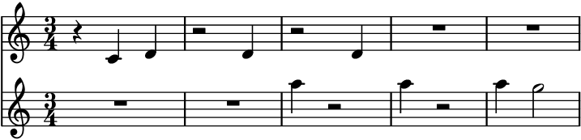>>> fader = auxjad.CrossFader(fade_out_container, ... fade_in_container, ... fade_out_last=True, ... ) >>> selection_a, selection_b = fader.output_all() >>> score = abjad.Score([ ... abjad.Staff(selection_a), ... abjad.Staff(selection_b), ... ]) >>> abjad.show(score)
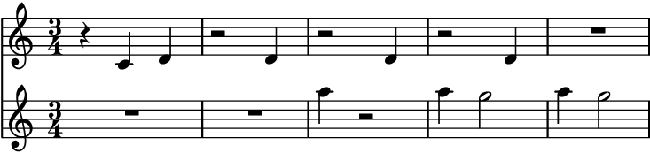>>> fader = auxjad.CrossFader(fade_out_container, ... fade_in_container, ... fade_in_first=True, ... fade_out_last=True, ... ) >>> selection_a, selection_b = fader.output_all() >>> score = abjad.Score([ ... abjad.Staff(selection_a), ... abjad.Staff(selection_b), ... ]) >>> abjad.show(score)
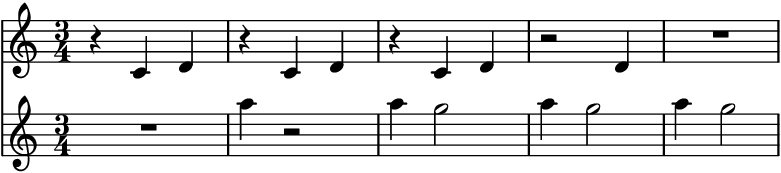weighted_duration:Setting
weighted_durationtoTruewill give more weight to the larger container (considering both its number of notes as well its length), making it more likely that both will fade in and out at a similar rate (default value isFalse).>>> fade_out_container = abjad.Container(r"e'2 c'2") >>> fade_in_container = abjad.Container( ... r"c''8 d''8 e''8 f''8 g''8 a''8 b''8 c'''8" ... ) >>> fader = auxjad.CrossFader(fade_out_container, fade_in_container) >>> selection_a, selection_b = fader.output_all() >>> score = abjad.Score([ ... abjad.Staff(selection_a), ... abjad.Staff(selection_b), ... ]) >>> abjad.show(score)
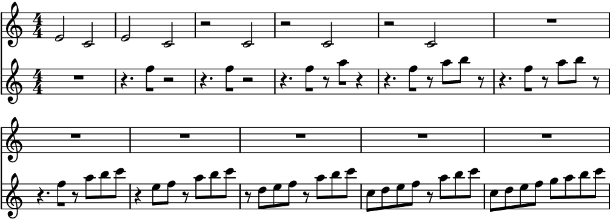>>> fader = auxjad.CrossFader(fade_out_container, ... fade_in_container, ... weighted_duration=True, ... ) >>> selection_a, selection_b = fader.output_all() >>> score = abjad.Score([ ... abjad.Staff(selection_a), ... abjad.Staff(selection_b), ... ]) >>> abjad.show(score)
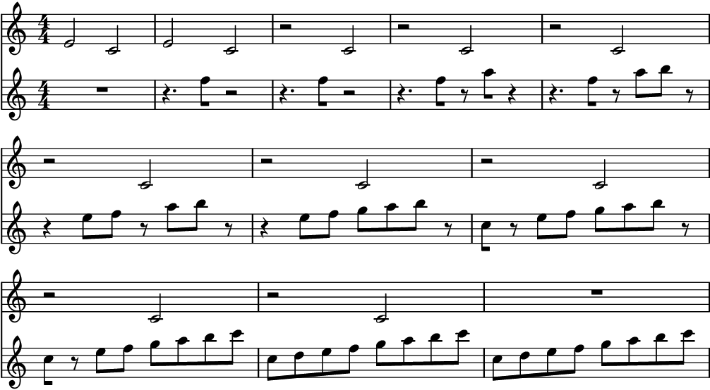initial_repetitionsandfinal_repetitions:The properties
initial_repetitionsandfinal_repetitionsset the number of repetitions of the initial and final measures (default is1for both).>>> fade_out_container = abjad.Container(r"a'4 bf'2 r4") >>> fade_in_container = abjad.Container(r"c''2 d''2") >>> fader = auxjad.CrossFader(fade_out_container, ... fade_in_container, ... initial_repetitions=2, ... final_repetitions=3, ... ) >>> selection_a, selection_b = fader.output_all() >>> score = abjad.Score([ ... abjad.Staff(selection_a), ... abjad.Staff(selection_b), ... ]) >>> abjad.show(score)
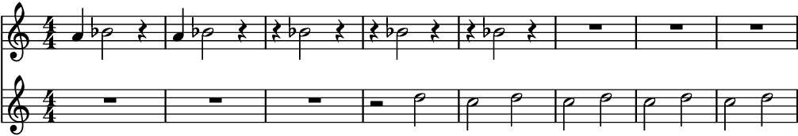repetition_chance:Use
repetition_chanceto set the chance of a measure repeating itself, ranging from0.0to1.0(default is0.0, i.e. no repetitions).>>> fade_out_container = abjad.Container(r"a'4 bf'2 r4") >>> fade_in_container = abjad.Container(r"c''2 d''2") >>> fader = auxjad.CrossFader(fade_out_container, ... fade_in_container, ... repetition_chance=0.8, ... ) >>> selection_a, selection_b = fader.output_n(4) >>> score = abjad.Score([ ... abjad.Staff(selection_a), ... abjad.Staff(selection_b), ... ]) >>> abjad.show(score)
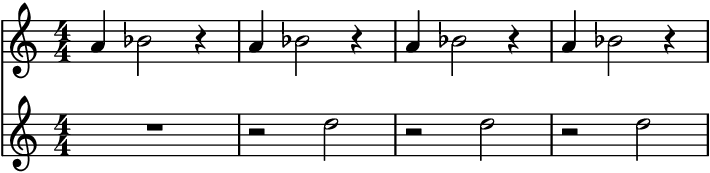omit_time_signatures:To disable time signatures altogether, initialise this class with the keyword argument
omit_time_signaturesset toTrue(default isFalse), or use theomit_time_signaturesproperty after initialisation.>>> fade_out_container = abjad.Container(r"fs'4 g'2 bf'4") >>> fade_in_container = abjad.Container(r"\times 4/5 {cs''4 d''1}") >>> fader = auxjad.CrossFader(fade_out_container, ... fade_in_container, ... omit_time_signatures=True, ... ) >>> selection_a, selection_b = fader.output_n(3) >>> score = abjad.Score([ ... abjad.Staff(selection_a), ... abjad.Staff(selection_b), ... ]) >>> abjad.show(score)
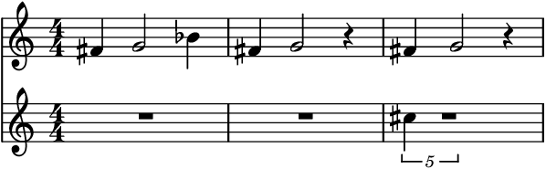
Tip
All methods that return an
abjad.Selectionwill add an initial time signature to it. Theoutput_n()andoutput_all()methods automatically remove repeated time signatures. When joining selections output by multiple method calls, useauxjad.mutate.remove_repeated_time_signatures()on the whole container after fusing the selections to remove any unecessary time signature changes.- Tweaking or disabling
abjad.Meter.rewrite_meter(): This function uses the default logical tie splitting algorithm from
abjad.Meter.rewrite_meter(). It can be disabled with the propertydisable_rewrite_meter.>>> fade_out_container = abjad.Container(r"c'8 d'4 e'8 ~ e'2") >>> fade_in_container = abjad.Container(r"c'2 d'2") >>> fader = auxjad.CrossFader(fade_out_container, ... fade_in_container, ... disable_rewrite_meter=True, ... ) >>> selection_a, selection_b = fader.output_n(3) >>> score = abjad.Score([ ... abjad.Staff(selection_a), ... abjad.Staff(selection_b), ... ]) >>> abjad.show(score)
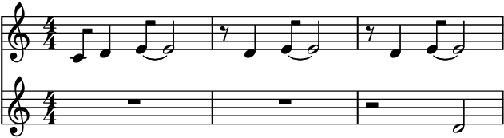Arguments available for tweaking the output of
abjad.Meter.rewrite_meter()areboundary_depth,maximum_dot_countandrewrite_tuplets, which work exactly as the identically named arguments ofabjad.Meter.rewrite_meter().fade_in_contentsandfade_out_contents:Containers can be switched after initialisation by overwriting the properties
fade_in_contentsorfade_out_contents. This will reset the process.>>> fade_out_container = abjad.Container( ... r"\time 3/4 e2 \times 2/3 {fs8 gs4}" ... ) >>> fade_in_container = abjad.Container( ... r"\time 3/4 c'8 d' e' f' g' a'" ... ) >>> fader = auxjad.CrossFader(fade_out_container, fade_in_container) >>> fader.fade_out_contents = abjad.Container(r"\time 3/4 a4. bf4.") >>> print(fader) { %%% \time 3/4 %%% a4. bf4. } { %%% \time 3/4 %%% c'8 d'8 e'8 f'8 g'8 a'8 }
- Time signature changes:
This class can handle time signature changes.
>>> fade_out_container = abjad.Container( ... r"\time 3/4 a'4 bf'2 ~ \time 2/4 bf'4 f'4" ... ) >>> fade_in_container = abjad.Container( ... r"\time 3/4 r16 cs''4.. e''4 \time 2/4 d''2" ... ) >>> fader = auxjad.CrossFader(fade_out_container, fade_in_container) >>> selection_a, selection_b = fader.output_n(3) >>> score = abjad.Score([ ... abjad.Staff(selection_a), ... abjad.Staff(selection_b), ... ]) >>> abjad.show(score)
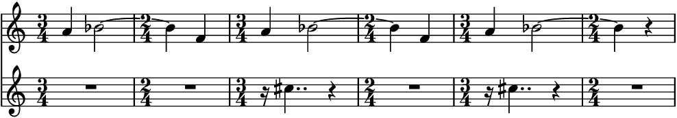- Indicators:
This class can also handle dynamics, articulations, chords, and tuplets. Hairpins might need manual tweaking if the leaf under which they terminate is removed.
>>> fade_out_container = abjad.Container(r"c'4.\p e'8--\f ~ e'2") >>> fade_in_container = abjad.Container( ... r"\times 2/3 {f'4-.\pp r4 d'4->\f ~ } d'2" ... ) >>> fader = auxjad.CrossFader(fade_out_container, ... fade_in_container, ... fade_in_first=True, ... fade_out_last=True, ... ) >>> selection_a, selection_b = fader.output_all() >>> score = abjad.Score([ ... abjad.Staff(selection_a), ... abjad.Staff(selection_b), ... ]) >>> abjad.show(score)
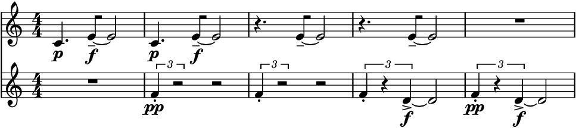
Tip
The functions
auxjad.mutate.remove_repeated_dynamics()andauxjad.mutate.reposition_clefs()can be used to clean the output and remove repeated dynamics and unnecessary clef changes.Warning
Do note that some elements that span multiple notes (such as ottava indicators, manual beams, etc.) can become problematic when notes containing them are split into two. As a rule of thumb, it is always better to attach those to the music after the fading process has ended.
- Using multiple voices:
The selections output by the fader can also be assigned to
abjad.Voicecontainers, which can then be displayed simultaneously on a singleabjad.Staff.>>> fade_out_container = abjad.Container(r"b'8 c''8 e''2 g''4") >>> fade_in_container = abjad.Container(r"\times 2/3 {e'2 d'2 c'2}") >>> fader = auxjad.CrossFader(fade_out_container, fade_in_container) >>> selection_a, selection_b = fader.output_all() >>> literal_voice_one = abjad.LilyPondLiteral(r'\voiceOne') >>> literal_voice_two = abjad.LilyPondLiteral(r'\voiceTwo') >>> abjad.attach(literal_voice_one, selection_a[0]) >>> abjad.attach(literal_voice_two, selection_b[0]) >>> staff = abjad.Staff( ... [abjad.Voice(selection_a), abjad.Voice(selection_b)], ... simultaneous=True, ... ) >>> abjad.show(staff)
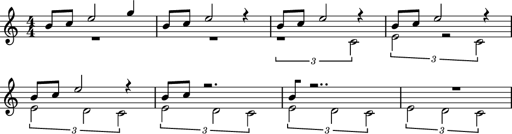- Using containers of different lengths:
It is possible to use this class with containers of different lengths and time signatures, although this feature is not fully implemented and should be considered experimental. LilyPond must be set up to allow different simultaneous time signatures, and
auxjad.mutate.sync_containers()can be used to add rests to the end of the shorter staff.>>> fade_out_container = abjad.Container(r"\time 3/4 c'4 d'4 e'4") >>> fade_in_container = abjad.Container(r"\time 4/4 g'2 a'2") >>> fader = auxjad.CrossFader(fade_out_container, ... fade_in_container, ... fade_in_first=True, ... fade_out_last=True, ... weighted_duration=True, ... ) >>> selection_a, selection_b = fader.output_all() >>> staff_a = abjad.Staff(selection_a) >>> staff_b = abjad.Staff(selection_b) >>> abjad.mutate.sync_containers([staff_a, staff_b]) >>> score = abjad.Score([staff_a, staff_b]) >>> lilypond_file = abjad.LilyPondFile.new() >>> score_block = abjad.Block(name='score') >>> layout_block = abjad.Block(name='layout') >>> score_block.items.append(score) >>> score_block.items.append(layout_block) >>> lilypond_file.items.append(score_block) >>> layout_block.items.append( ... r'''\context { ... \Score ... \remove "Timing_translator" ... \remove "Default_bar_line_engraver" ... } ... \context { ... \Staff ... \consists "Timing_translator" ... \consists "Default_bar_line_engraver" ... }''' ... ) >>> abjad.show(score)
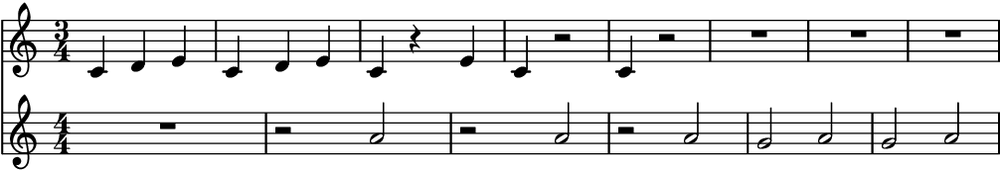
Methods
__call__()Calls the cross fading process, returning a
tupleofabjad.Selectionobjects.__init__(fade_out_contents, fade_in_contents, *)Initialises self.
__iter__()Returns an iterator, allowing instances to be used as iterators.
__len__()Returns the sum of the number of notes of both contents.
__next__()Calls the cross fading process for one iteration, returning a
tupleofabjad.Selectionobjects.__repr__()Returns interpreter representation of both contents.
Goes through the whole fading process and outputs a tuple of two
abjad.Selectionobjects.output_n(n)Goes through
niterations of the fading process and outputs a tuple of twoabjad.Selectionobjects.reset()Resets to the initial state.
Attributes
Sets the argument
boundary_depthofabjad.Meter.rewrite_meter().Read-only property, returns the result of the last operation as a
tupleofabjad.Selectionobjects.When
True, the durations of the notes in the output will not be rewritten by theabjad.Meter.rewrite_meter()mutation.The
abjad.Containerto be faded in.When
True, the first note of the fade in content will be added before a note from the fade out content is removed.The
abjad.Containerto be faded out.When
True, the last note of the fade out content will be removed only after the full fade in content is added.The number of times the final containers are repeated after the cross fade process ends.
Read-only property, returns the counter of
final_repetitions.The number of times the initial containers are repeated before the cross fade process starts.
Read-only property, returns the counter of
initial_repetitions.Sets the argument
maximum_dot_countofabjad.Meter.rewrite_meter().When
True, all time signatures will be omitted from the output.The chance of not processing neither
fade_in_contentsnotfade_out_contentson a call, thus repeating the previous output.Sets the argument
rewrite_tupletsofabjad.Meter.rewrite_meter().When
True, multi-measure rests will be used for silent measures.Weights the choice of fader according to its number of notes and total duration.
- __call__() → tuple[source]¶
Calls the cross fading process, returning a
tupleofabjad.Selectionobjects.
- __init__(fade_out_contents: abjad.score.Container, fade_in_contents: abjad.score.Container, *, fade_in_first: bool = False, fade_out_last: bool = False, initial_repetitions: int = 1, final_repetitions: int = 1, repetition_chance: float = 0.0, weighted_duration: bool = False, disable_rewrite_meter: bool = False, omit_time_signatures: bool = False, use_multimeasure_rests: bool = True, boundary_depth: Optional[int] = None, maximum_dot_count: Optional[int] = None, rewrite_tuplets: bool = True) → None[source]¶
Initialises self.
- __next__() → tuple[source]¶
Calls the cross fading process for one iteration, returning a
tupleofabjad.Selectionobjects.
- property boundary_depth: Optional[int]¶
Sets the argument
boundary_depthofabjad.Meter.rewrite_meter().
- property current_window: tuple¶
Read-only property, returns the result of the last operation as a
tupleofabjad.Selectionobjects.
- property disable_rewrite_meter: bool¶
When
True, the durations of the notes in the output will not be rewritten by theabjad.Meter.rewrite_meter()mutation.
- property fade_in_contents: abjad.score.Container¶
The
abjad.Containerto be faded in.
- property fade_in_first: bool¶
When
True, the first note of the fade in content will be added before a note from the fade out content is removed.
- property fade_out_contents: abjad.score.Container¶
The
abjad.Containerto be faded out.
- property fade_out_last: bool¶
When
True, the last note of the fade out content will be removed only after the full fade in content is added.
- property final_repetitions: int¶
The number of times the final containers are repeated after the cross fade process ends.
- property final_repetitions_counter: int¶
Read-only property, returns the counter of
final_repetitions.
- property initial_repetitions: int¶
The number of times the initial containers are repeated before the cross fade process starts.
- property initial_repetitions_counter: int¶
Read-only property, returns the counter of
initial_repetitions.
- property maximum_dot_count: Optional[int]¶
Sets the argument
maximum_dot_countofabjad.Meter.rewrite_meter().
- property omit_time_signatures: bool¶
When
True, all time signatures will be omitted from the output.
- output_all() → tuple[source]¶
Goes through the whole fading process and outputs a tuple of two
abjad.Selectionobjects.
- output_n(n: int) → tuple[source]¶
Goes through
niterations of the fading process and outputs a tuple of twoabjad.Selectionobjects.
- property repetition_chance: float¶
The chance of not processing neither
fade_in_contentsnotfade_out_contentson a call, thus repeating the previous output.
- property rewrite_tuplets: bool¶
Sets the argument
rewrite_tupletsofabjad.Meter.rewrite_meter().
- property use_multimeasure_rests: bool¶
When
True, multi-measure rests will be used for silent measures.
- property weighted_duration: bool¶
Weights the choice of fader according to its number of notes and total duration.